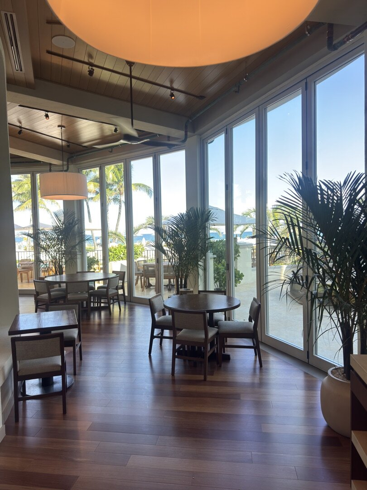
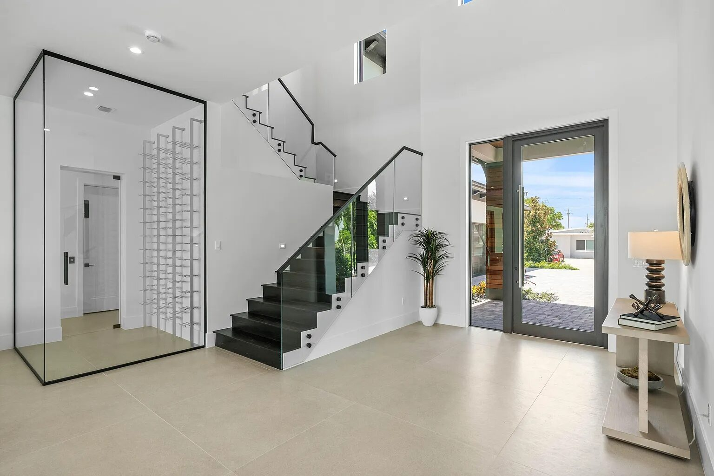

Interior glass, finish-grade.
The modern office is glass - conference rooms, executive suites, collaborative space, reception. ACG installs framed and frameless partition systems that are plumb, level, acoustically honest, and pristine on occupancy day.
Where finish work meets technical installation.
Interior partitions live at the intersection of finish work and technical glazing. They have to be perfectly plumb and level, transition cleanly to ceiling grid and flooring, and look flawless the day the tenant walks in - there is no caulk joint big enough to hide a bad measurement.
ACG installs framed and frameless systems floor-to-ceiling or slab-to-slab: fully framed assemblies where acoustic performance matters, minimal-frame and frameless systems for clean contemporary fronts, switchable privacy glass for conference rooms and executive offices, and sliding glass panels where the space needs to flex.
We coordinate directly with your GC’s interior trades - ceiling grid, flooring, drywall - so every interface closes clean. Each partition is field-measured, cut, and set with the tolerances finish work demands. See office glass partitions in Florida for a deeper system guide.

Every interior configuration.
Why partitions close out clean here.
Field-measured, not assumed
Interior glass is cut to the space as built, not as drawn. ACG measures after framing and grid are set, so panels land right the first time - no rework, no waiting on remakes.
Acoustics are edge details
Standard glass partitions do little for sound. Real attenuation comes from laminated acoustic glass plus gaskets and edge conditions that kill flanking paths - that’s a detail package, not a product swap.
Trade coordination built in
Ceiling grid, flooring, and drywall interfaces are coordinated before install day. The partition scope should never be the reason another trade comes back.
One Division 08 subcontract
Interior glass rides the same subcontract as the storefront, entrances, and exterior glazing - one PM, one submittal log, one warranty across the whole opening scope.
Interior glass in place.

From office fronts to specialty enclosures.
The same crews that set exterior storefront handle the interior scope - glass wine cellars, glazed feature walls, clubhouse interiors, and office fronts. See the 1172 S Harbor project and the Eau Palm Beach Resort for interior glazing in the field.

Interior glazing on your finish schedule?
Send plans and finish schedules - a scoped proposal with system recommendations comes back in 48 hours.